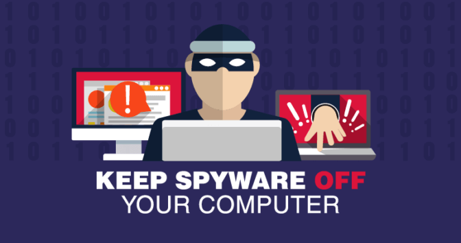

Definition: As its name suggests, a spyware is a software that spies on user's computer. It is typically hidden in a freeware or shareware programs that can be downloaded from the internet. Once installed, the spyware monitors user activity on the Internet and transmits the information in the background to someone else. It can also gather from e-mail addresses, browsing habits all the way to usernames and passwords, and even the credit card information.
